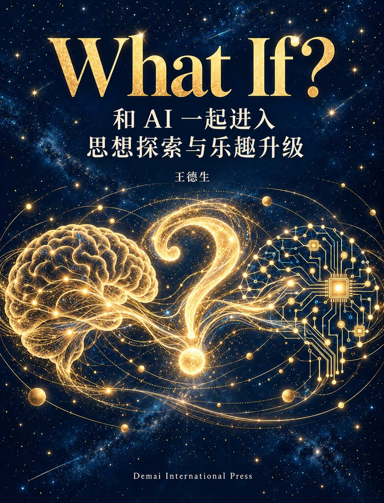

如果改变做法与纠缠
S = F(D, E)
会显露什么？把愿望变成可以辨认的变化，比较可能出现的不同结果。
进入第一类探索 →
教育 · 健康 · 事业
和 AI 一起进入思想探索与乐趣升级
一本读到一半的书，一次不太想出门的散步，一份每周都要重写的工作报告，都可以成为思想探索的起点。与AI一起问一句“如果换一下，会怎样”，熟悉的事情便可能显露出尚未看见的关系。
这是一部写给普通人的思想探索书，从教育、健康与事业中的日常困惑出发，邀请你和AI一起问：如果改变一点，会怎样？书中以SDE三方程打开三类问题，用猜想、执行、评估、反馈、修正与迭代推进探索，再走向分化、重组与升维。通过具体设例和实践卡，你可以练习提出新设想、比较解释、推理查证，让一次回答成为下一轮发现的起点，在不确定中寻找思考的乐趣，给新问题留出位置。
全文开放 · 章节阅读、连续全文与PDF
S = F(D, E)
会显露什么？把愿望变成可以辨认的变化，比较可能出现的不同结果。
进入第一类探索 →D = G(S, E)
运行会怎样改变？发现、困难与反馈出现以后，重新研究下一步怎样发生。
进入第二类探索 →E = H(S, D)
会形成什么新纠缠？看见角色、材料、期待与协作怎样相互牵动。
进入第三类探索 →S：显露；D：差异序列；E：特征纠缠。可以先读生活故事，再回到SDE入门基础章。
前六步构成一轮能够修订的探索。出现值得区分的情况后，再进入分化与重组；升维需要在研究单位或组织能力的实际变化中得到说明。九步可以接续发生，也允许在当前问题已经足够清楚时停下。
六路径提供进入与展开的走法，三原理支持对张力、变化与回写的理解。它们是本书的背景支持，阅读重点是具体的猜想、推理、执行与验证。
从读书前自己的问题、轮流出题和留下错误，走向兴趣分化、共同学习与小作品。
从一本没读完的书开始 →从散步、久坐、精力、睡前安排和食物准备，辨认自己的条件与可以调整的生活组织。
从一次散步开始 →从一份周报、一个小样和一句客户抱怨，探索新的工作方式、服务与协作关系。
从每周最烦的一件事开始 →想先理解方法，可以从导论和基础章读起；手边已有具体问题，可以直接进入教育、健康或事业的相关章节。读到一处真正牵动自己的差异，就停下来和AI比较两种猜想，再选择适合问题的推理、核对或小尝试。
书中的人物、对话与探索经过为说明性设例。它们用于展开方法与边界；本书不把设例当作效果实证。正文标注的健康资料与理论来源可在参考资料页核查。